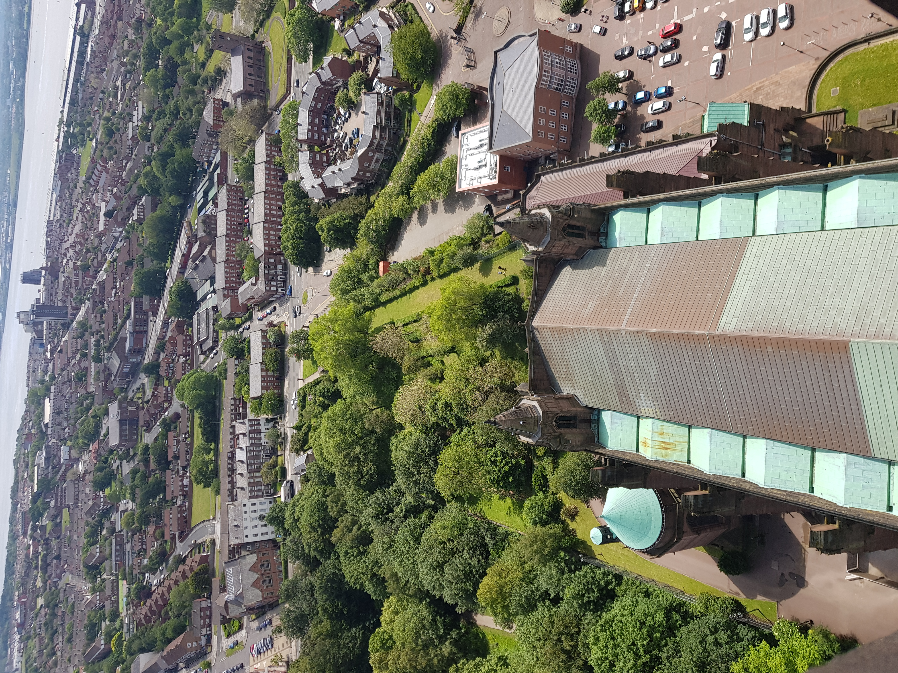
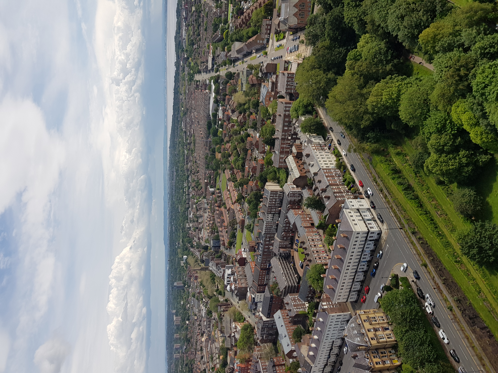
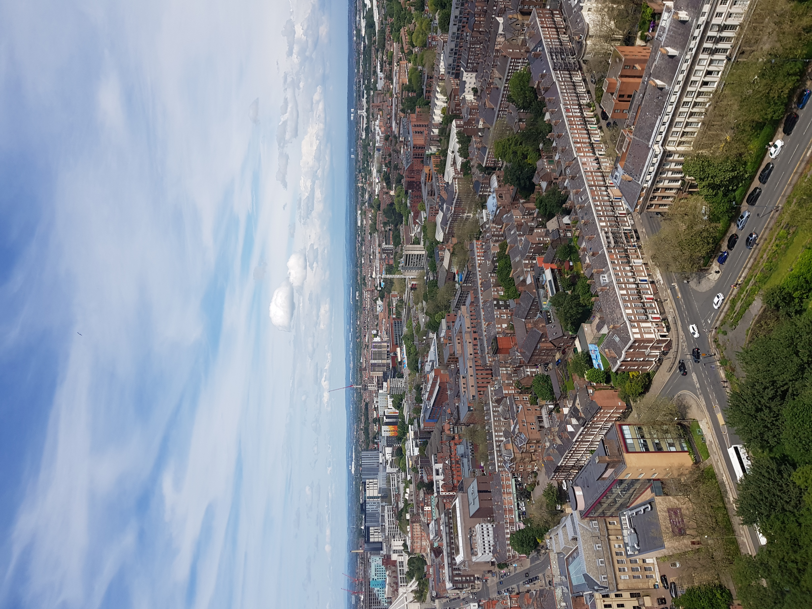

There are many buildings that allow the opportunity to get unique, high-up views across the skyline of Liverpool such as these shots from the Anglican Cathedral, one of Liverpool's two cathedrals.


